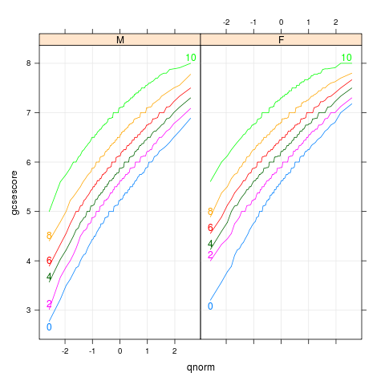
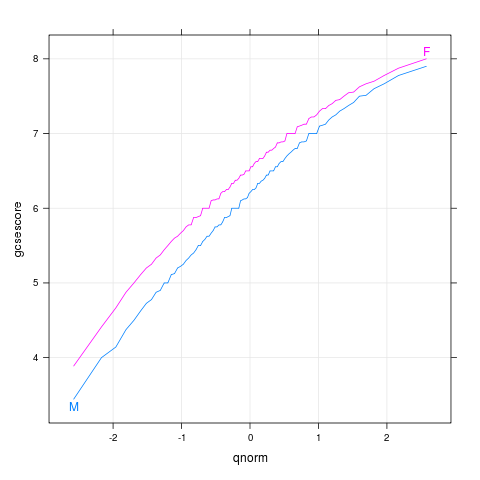
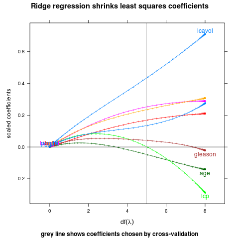
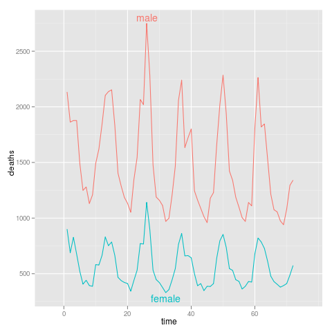

directlabels - lineplot -
Positioning Function - lines2
Positioning Function for 2 groups of longitudinal data. One curve
is on top of the other one (on average), so we label the top one
at its maximal point, and the bottom one at its minimal
point. Vertical justification is chosen to minimize collisions
with the other line. This may not work so well for data with high
variability, but then again lineplots may not be the best for
these data either.
lines2 <- function
### Positioning Function for 2 groups of longitudinal data. One curve
### is on top of the other one (on average), so we label the top one
### at its maximal point, and the bottom one at its minimal
### point. Vertical justification is chosen to minimize collisions
### with the other line. This may not work so well for data with high
### variability, but then again lineplots may not be the best for
### these data either.
(d,
### The data.
offset=0.3,
### Offset from 0 or 1 for the vjust values.
...
### ignored.
){
top <- 0-offset
bottom <- 1+offset
y <- ddply(d,.(groups),function(d)mean(d$y))
ddply(y,.(groups),function(D){
biggest.on.average <- D$V==max(y$V)
f <- if(biggest.on.average)max else min
ld <- subset(d,groups==D$groups)
pos <- ddply(subset(ld,y==f(ld$y)),.(groups),function(x)
data.frame(x=max(x$x)-diff(range(x$x))/2,y=x$y[1]))
other <- subset(d,groups!=D$groups)
other.y <- other[which.min(abs(other$x-pos$x)),"y"]
smaller.here <- pos$y
 |
bodyweight
data(BodyWeight,package="nlme")
p <- xyplot(weight~Time|Diet,BodyWeight,groups=Rat,type='l',
layout=c(3,1),xlim=c(-10,75))
direct.label(p,"lines2")
|
|  |
chemqqmathscore
data(Chem97,package="mlmRev")
p <- qqmath(~gcsescore|gender,Chem97,groups=factor(score),
type=c('l','g'),f.value=ppoints(100))
direct.label(p,"lines2")
|
|  |
chemqqmathsex
data(Chem97,package="mlmRev")
p <- qqmath(~gcsescore,Chem97,groups=gender,
type=c("l","g"),f.value=ppoints(100))
direct.label(p,"lines2")
|
|  |
ridge
## complicated ridge regression lineplot ex. fig 3.8 from Elements of
## Statistical Learning, Hastie et al.
myridge <- function(f,data,lambda=c(exp(-seq(-15,15,l=200)),0)){
require(MASS)
fit <- lm.ridge(f,data,lambda=lambda)
X <- data[-which(names(data)==as.character(f[[2]]))]
Xs <- svd(scale(X)) ## my d's should come from the scaled matrix
dsq <- Xs$d^2
## make the x axis degrees of freedom
df <- sapply(lambda,function(l)sum(dsq/(dsq+l)))
D <- data.frame(t(fit$coef),lambda,df) # scaled coefs
molt <- melt(D,id=c("lambda","df"))
## add in the points for df=0
limpts <- transform(subset(molt,lambda==0),lambda=Inf,df=0,value=0)
rbind(limpts,molt)
}
data(prostate,package="ElemStatLearn")
pros <- subset(prostate,train==TRUE,select=-train)
m <- myridge(lpsa~.,pros)
p <- xyplot(value~df,m,groups=variable,type="o",pch="+",
panel=function(...){
panel.xyplot(...)
panel.abline(h=0)
panel.abline(v=5,col="grey")
},
xlim=c(-1,9),
main="Ridge regression shrinks least squares coefficients",
ylab="scaled coefficients",
sub="grey line shows coefficients chosen by cross-validation",
xlab=expression(df(lambda)))
direct.label(p,"lines2")
|
|  |
sexdeaths
dts <- cbind(male=mdeaths,female=fdeaths,time=1:length(mdeaths))
ddf <- melt(as.data.frame(dts),id="time")
names(ddf) <- c("time","sex","deaths")
p <- qplot(time,deaths,data=ddf,colour=sex,geom="line")+xlim(-5,77)
direct.label(p,"lines2")
|